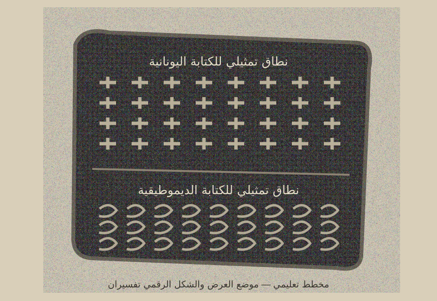

جزء مرسوم كانوب — عرض تعليمي

الكتابتان الظاهرتان على الجزء المكتشف
الديموطيقية: خط مصري متأخر سريع الكتابة استُخدم في الوثائق والنصوص الرسمية.
اليونانية: إحدى لغات المرسوم في العصر البطلمي، وتساعد على مقارنة مضمون النص بين اللغات.
عُثر على الجزء في صالة مدخل المعبد، أما موضع النموذج داخل الجولة فهو تفسيري فقط.